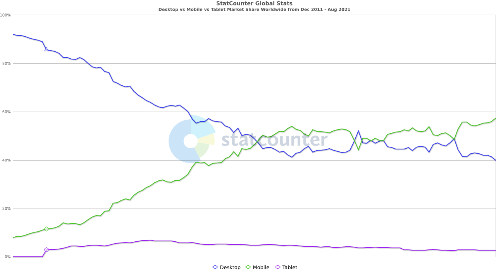
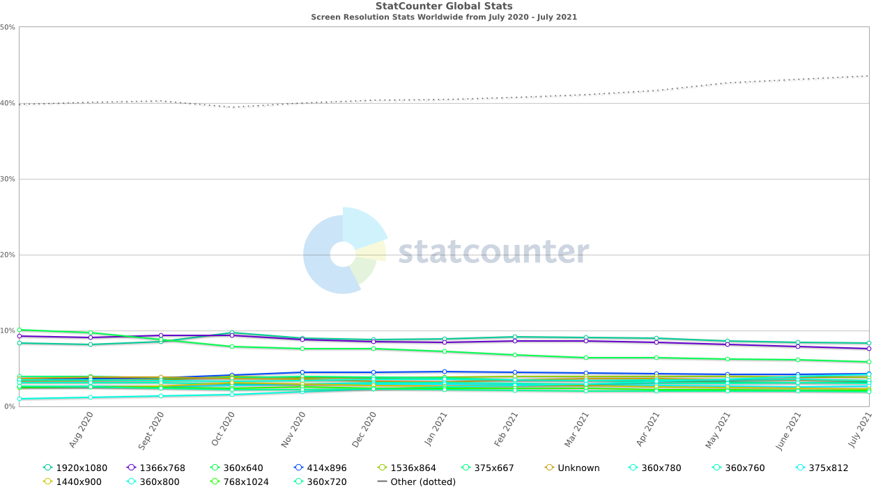
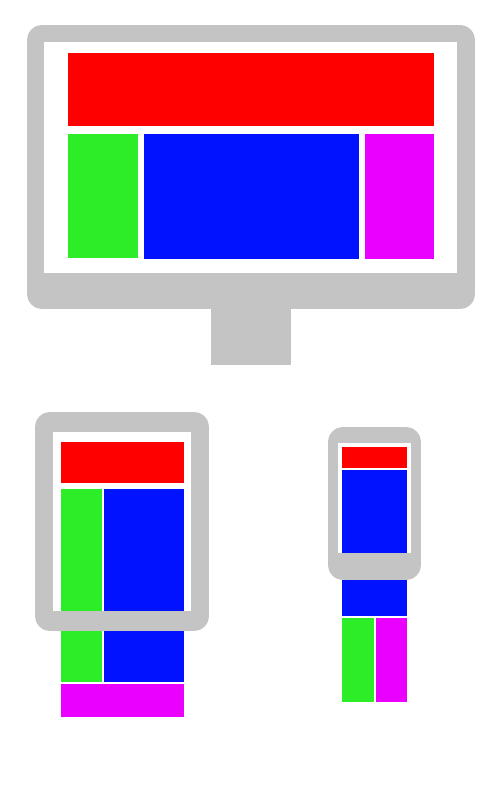
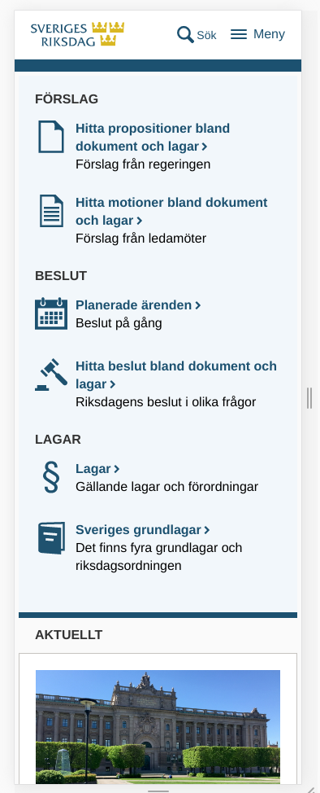
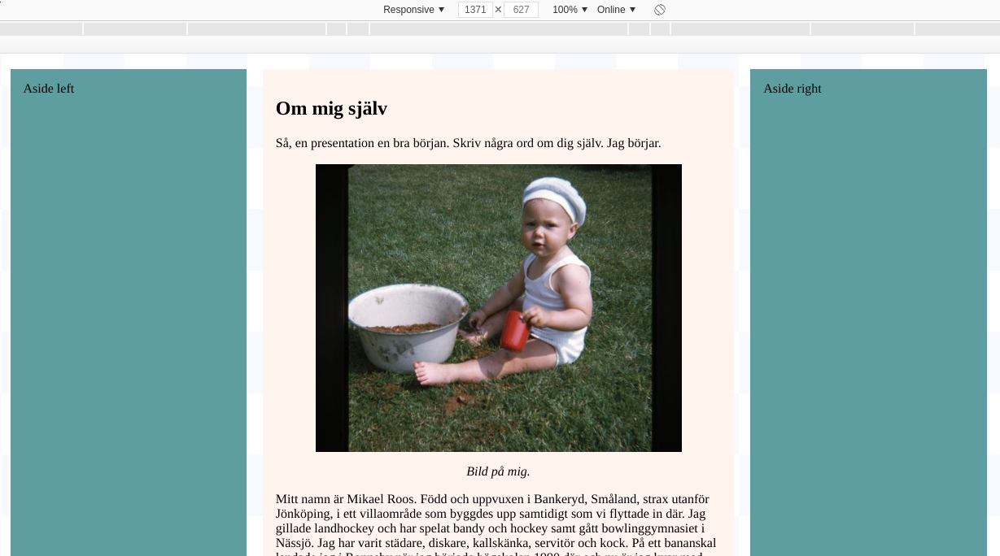
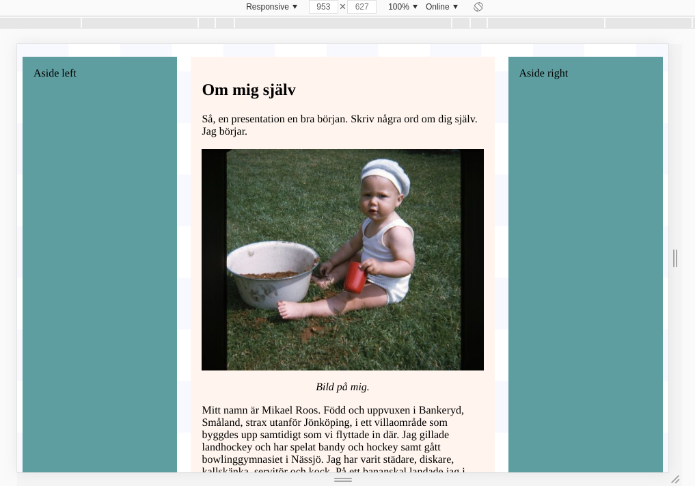
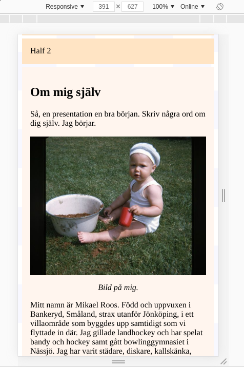
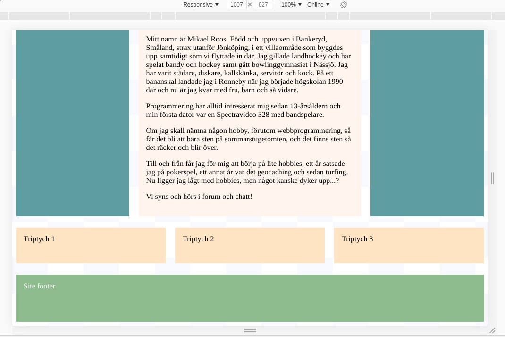
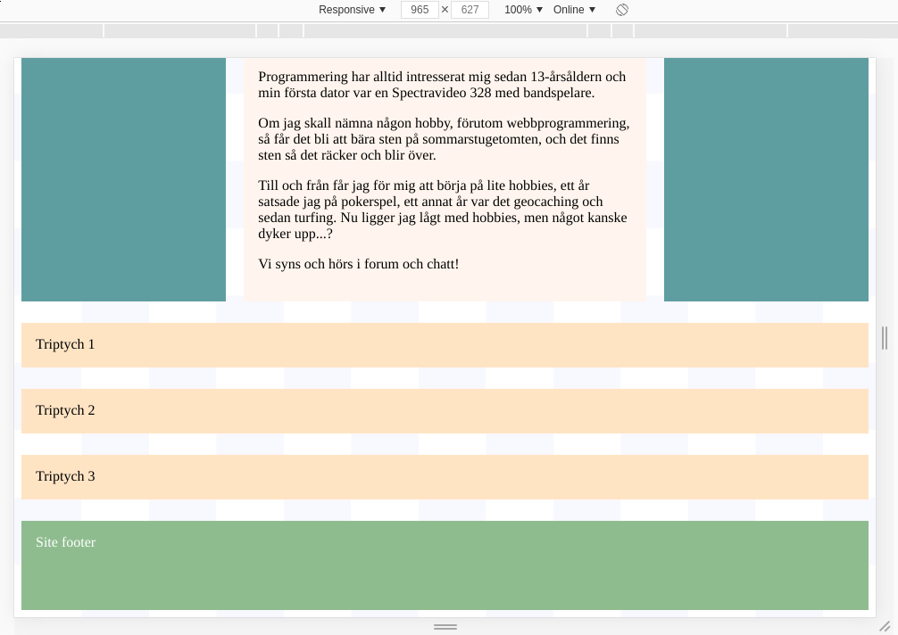

<!doctype html>
<html class="theme-5">
<meta charset="utf-8" />
<link href="../html-slideshow.bundle.min.css" rel="stylesheet" />
<link href="../style.css" rel="stylesheet" />
<script src="https://dbwebb.se/cdn/js/html-slideshow_v1.1.0.bundle.min.js"></script>

<title>Responsive web design</title>

<script data-role="slide" type="text/html" data-markdown class="titlepage center">
# Responsive web design
## Same content - many devices
### Mikael Roos
</script>


<script data-role="slide" type="text/html" data-markdown>
# Agenda

* Responsive web design
* What it is
* Why?
* How to do it

</script>


<script data-role="slide" type="text/html" data-markdown class="titlepage center">
# Responsive web design
## What it is
</script>


<script data-role="slide" type="text/html" data-markdown>
# Responsive web design

> "an approach to web design that makes web pages render well on a variety of devices and window or screen sizes from minimum to maximum display size"

</script>


<script data-role="slide" type="text/html" data-markdown class="titlepage center">
# Responsive web design
## Why?
</script>


<script data-role="slide" data-markdown type="text/html" class="center">
# Market share devices
<figure>
    
    <figcaption>Desktop vs Mobile vs Tablet Market Share Worldwide<br>https://gs.statcounter.com/platform-market-share/desktop-mobile-tablet
</figure>
</script>


<script data-role="slide" data-markdown type="text/html" class="center">
# Screen resolutions
<figure>
    
    <figcaption>Screen Resolution Stats Worldwide<br>https://gs.statcounter.com/screen-resolution-stats</figcaption>
</figure>
</script>


<script data-role="slide" type="text/html" data-markdown>
# Screen resolutions...

```
1920x1080
1536x864
1440x900
1366x768
768x1024
414x896
375x812,667
360x800,780,760,720,640
```

<p class="footnote">Really large screens does not yet seem to be on the list.<br>It is also hard to view what is a desktop, laptop, tablet, mobile or watch.</p>

</script>


<script data-role="slide" data-markdown type="text/html" class="center">
# Render same content
<figure>
    
    <figcaption>Render same content - website - on different devices.</figcaption>
</figure>
</script>


<script data-role="slide" data-markdown type="text/html" class="center">
# Full width
<figure>
    
    <figcaption>This might be how the website looks on a desktop.</figcaption>
</figure>
</script>


<script data-role="slide" data-markdown type="text/html" class="center">
# Medium width
<figure>
    
    <figcaption>This might be how the website looks on a padlet.</figcaption>
</figure>
</script>


<script data-role="slide" data-markdown type="text/html" class="center">
# Small width
<figure>
    
    <figcaption>This might be how the website looks on a mobile.</figcaption>
</figure>
</script>


<script data-role="slide" type="text/html" data-markdown>
# Render same content...

* One website
* Render different on
    * large desktop (5120x2160 for example)
    * desktop (1920x1080)
    * laptop
    * padlet
    * large/small mobile
    * watch
* Show and hide, resize and reflow the content to the viewport

</script>


<script data-role="slide" type="text/html" data-markdown>
# Related techniques

* Fluid design (page elements relative size to viewport)
* Adaptive web design (multiple versions to fit the users device)
* Mobile first (create the mobile site first and then expand it)
* Progressive enhancement (enhance presentation if device & performance allows it)
* Unobtrusive JavaScript (fully function without JavaScript)

</script>


<script data-role="slide" type="text/html" data-markdown class="titlepage center">
# Responsive web design
## How to do it
</script>


<script data-role="slide" type="text/html" data-markdown>
# Responsive web design

* Set the viewport
* Size content to the viewport
* Media queries for responsiveness

</script>


<script data-role="slide" type="text/html" data-markdown>
# Set the viewport

Allow the page to reflow content to match different screen sizes

```
<!DOCTYPE html>
<html lang="en">
<head>
<meta name="viewport" content="width=device-width, initial-scale=1">
</head>
```

<p class="footnote">The page should match the screen's width in device-independent pixels, a device independent pixel being a representation of a single pixel, which may on a high density screen consist of many physical pixels.</p>

</script>


<script data-role="slide" type="text/html" data-markdown>
# Size content to the viewport

* Layout (no scrolling horizontally)
* Content to fit in the viewport width
* Images
* Text

</script>


<script data-role="slide" type="text/html" data-markdown>
# Layout and content

Use some or all of these techniques

* Use fluid layout using %
* Use max-width to set how wide the box can be
    * It shrinks when the viewport shrinks
* Use flex (or grid) to ease layout

<p class="footnote">Your basic layout will set the limitations for your page responsive structure.</p>

</script>


<script data-role="slide" type="text/html" data-markdown>
# Responsive images

Let the image take up max width to make it scalable

```
img {
  max-width: 100%;
  display: block;
}
```

</script>


<script data-role="slide" data-markdown type="text/html" class="center">
# Default max width
<figure>
    
    <figcaption>Max size of image when the article width is wide.</figcaption>
</figure>
</script>


<script data-role="slide" data-markdown type="text/html" class="center">
# Smaller width
<figure>
    
    <figcaption>Image scales to outer box boundary when article width is smaller.</figcaption>
</figure>
</script>


<script data-role="slide" data-markdown type="text/html" class="center">
# Small width
<figure>
    
    <figcaption>Image scaled further down when the article width is set for a mobile.</figcaption>
</figure>
</script>


<script data-role="slide" type="text/html" data-markdown>
# Floating images

When floating images to the left/right you might need to know the original size of the image to make it reponsive.

```


```

Make the smaller image take up the full space when the article shrinks.

```
@media (max-width: 800px) {
    img.third {
        float: none;
        width: 100%;
    }
}
```


</script>


<script data-role="slide" type="text/html" data-markdown>
# Different images

Show different images depending on the device

```
<picture>
  <source srcset="img_smallflower.jpg" media="(max-width: 600px)">
  <source srcset="img_flowers.jpg" media="(max-width: 1500px)">
  <source srcset="flowers.jpg">
  
</picture>
```

<p class="footnote">A bit more advanced when writing your HTML for each image. You need logistics to create and maintain several versions of the same image.</p>

</script>


<script data-role="slide" type="text/html" data-markdown>
# Responsive text

* Use media queries
* Use `vw` (% of viewport width) when specifying font-size
* Use `calc()`, a reference variable for size, and media queries
* Use `clamp()` to specify min, preferred, max size

<p class="footnote">Checking it out on the actual device and make adjustments using media queries might be an easy way to go.</p>

</script>


<script data-role="slide" type="text/html" data-markdown>
# Responsive text...

Start with a reasonable font size for desktop (depends on your font)

```
body {
    font-size: 18px;
}
```

Adjust when going to smaller devices

```
@media (max-width: 1000px) {
    body {
        font-size: 16px;
    }
```

<p class="footnote">Always view with the actual font-family on the target device.</p>

</script>


<script data-role="slide" type="text/html" data-markdown>
# Responsive breakpoints

* Media queries for responsiveness

```
@media (max-width: 1000px) {
    .triptych {
        flex-wrap: wrap;
    }

    .triptych > * {
        width: calc(var(--box-max-width));
        margin-right: 0;
    }
}
```

<p class="footnote">Change box width when viewport changes.</p>

</script>


<script data-role="slide" data-markdown type="text/html" class="center">
# Width > 1000
<figure>
    
    <figcaption>Default layout when the width is greater than 1000px.</figcaption>
</figure>
</script>


<script data-role="slide" data-markdown type="text/html" class="center">
# Width < 1000
<figure>
    
    <figcaption>Responsive layout when the width is less than 1000px.</figcaption>
</figure>
</script>


<script data-role="slide" type="text/html" data-markdown>
# How to breakpoint

* Focus on actual needed (larger) breakpoints
* Focus on viewport width and not the device
* Try out the website on common devices such as desktop, padlet, mobile
    * Check both portrait and landscape
    * Add (smaller) breakpoints when needed

</script>


<script data-role="slide" type="text/html" data-markdown>
# How to breakpoint...

* No horisontal scrollbar
* Content boxes has enough space (width)
* Text is readable
* Images (media) are viewable
* Whitespace is adequate
    * The empty space between content and boxes

</script>


<script data-role="slide" type="text/html" data-markdown>
# Tip

* Avoid hiding content
    * Parts of the website not visible on some devices (width)?
* Have a plan for your layout
    * Stick to it
    * Your layout always has limitations
    * Fixing things that your layout does not support can usually be done but might be costable
    * More and more fixes gets you into trouble
        * Consider changing your layout

</script>


<script data-role="slide" type="text/html" data-markdown>
# Industry matters

* Common websites should always be responsive
    * Easiest way to support all devices
* Search engine promotes mobile good design
* Older layout is not responsive - might be a bit hard to change that (layout does not support responsiveness - a lot of fixes)

Consider you content, application, service - who is using it and when, on what type of device - then decide for your "responsive strategy" or another one.

</script>


<script data-role="slide" type="text/html" data-markdown>
# Research matters

* Designing The Autogate Pass Dashboard Application with Android based Responsive Web Design Technology
* A Study on the Transition of the Adaptive into Responsive Web Design Methods on Smart Devices
* Vast: An Open Source Web Framework Extending the Responsive Web to Large Scale Display Systems
* A responsive web search system using word co-occurrence density and ontology: Independent Study Project Search

<p class="footnote">Titles of research papers including "Responsive web design" from 2017 and forward.</p>

</script>


<script data-role="slide" type="text/html" data-markdown>
# Summary

* Responsive web design is a easy way to reach customers on all devices
* Could be mandatory for all common websites
* Build a responsive layout and the rest is "easy"

</script>


<script data-role="slide" type="text/html" data-markdown class="titlepage center">
# The end
</script>


<script data-role="slide" type="text/html" data-markdown>
</script>

</html>
